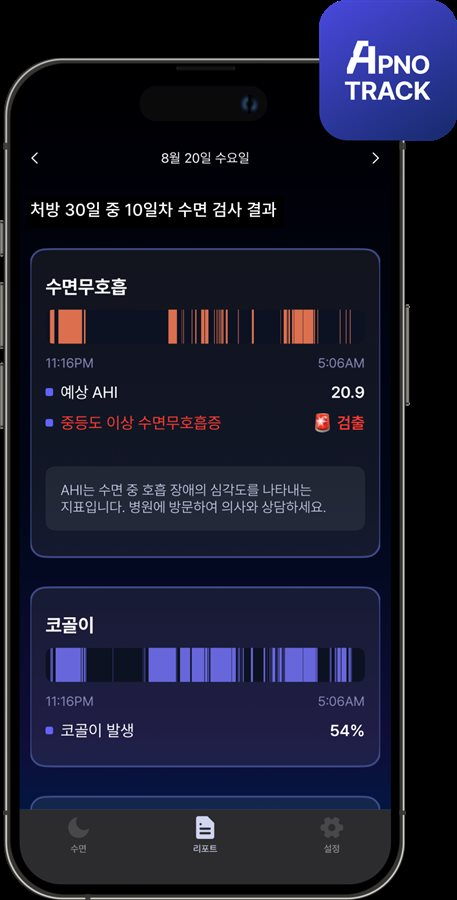
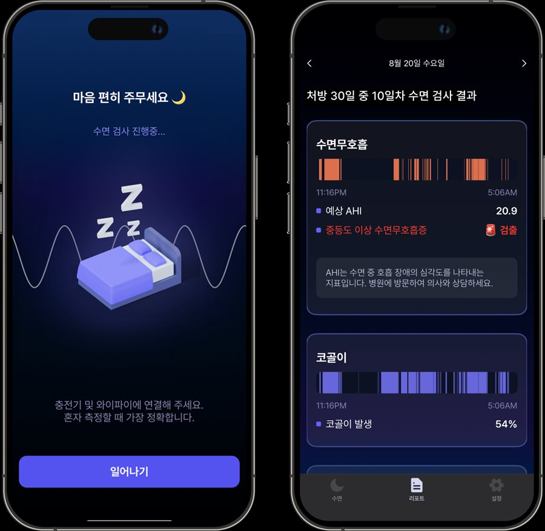
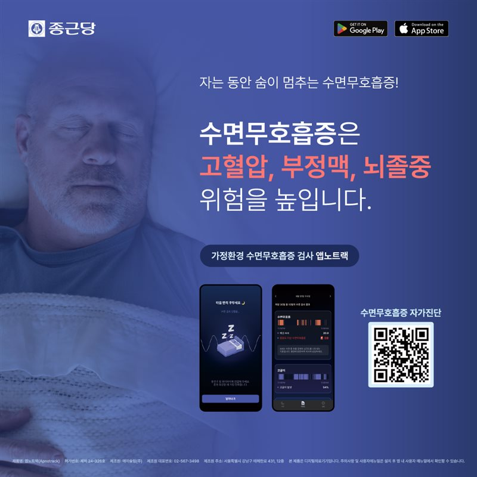

수면무호흡
수면 중 발생하는 무호흡·저호흡의 양상을 분석하고 수면무호흡지수(AHI)를 산출하여 중등도 이상의 수면무호흡증을 선별합니다.
수면 중 호흡은 수면무호흡을 평가하는 중요한 정보입니다.
Apnotrack(앱노트랙)은 스마트폰으로 수면 중 호흡음을 기록하고 AI 알고리즘으로 분석하여 중등도 이상의 수면무호흡증을 선별하는 식품의약품안전처 허가 의료기기입니다.
별도의 센서나 웨어러블 기기를 착용하지 않고, 평소와 같은 가정 환경에서 수면을 측정할 수 있습니다.

중등도 이상의 수면무호흡증 선별을 위한 의료기기
(식품의약품안전처 허가를 받은 수면무호흡증 선별용 의료기기)
수면 중 발생하는 무호흡·저호흡의 양상을 분석하고 수면무호흡지수(AHI)를 산출하여 중등도 이상의 수면무호흡증을 선별합니다.
수면 중 발생하는 코골이의 발생 양상과 비율을 확인합니다.
수면효율과 수면 단계 등 측정된 수면 관련 지표를 함께 확인할 수 있습니다.
현재의 수면 증상과 생활 패턴을 확인하고 Apnotrack 검사가 필요한지 판단합니다.
의료진이 Apnotrack Hub를 통해 환자코드를 발급합니다.
스마트폰에 앱을 설치한 후 취침 전에 수면검사를 시작합니다. 별도의 센서나 웨어러블 기기를 착용하지 않고 평소 수면환경에서 측정합니다.
기상 후 측정을 종료하면 수면무호흡지수, 코골이 및 수면 관련 지표를 확인할 수 있습니다.
측정 결과를 의료진이 증상 및 진료 내용과 함께 종합적으로 확인합니다. 필요한 경우 수면무호흡에 대한 추가적인 정밀평가와 전문적인 치료를 안내합니다.

수면 상태는 하루마다 달라질 수 있습니다.
Apnotrack은 7일 또는 30일간 가정에서 수면을 측정할 수 있어, 한 번의 검사만으로 확인하기 어려운 평소의 수면무호흡 및 코골이 양상을 여러 날에 걸쳐 살펴보는 데 활용할 수 있습니다.
수면무호흡증의 정확한 진단은 별도의 진단검사가 필요합니다.
Apnotrack은 중등도 이상의 수면무호흡증을 선별하기 위한 의료기기이며, 수면무호흡증의 확진을 위한 표준 수면검사를 대체하지 않습니다. (수면다원검사(PSG)는 수면무호흡증을 진단하는 대표적인 표준검사입니다.)
따라서 Apnotrack은 “수면무호흡증이 있는지 확인하기 위한 첫 단계의 선별평가”로 활용할 수 있습니다.
Apnotrack은 수면다원검사와 비교하는 임상시험을 통해 성능을 평가받았습니다. 중등도 이상의 수면무호흡증(AHI ≥ 15)을 기준으로 한 결과는 다음과 같습니다.
82%
민감도
87%
특이도
위 수치는 해당 임상시험 조건에서의 결과이며, 개인의 검사 결과와 실제 진단이 항상 일치하는 것은 아닙니다.

Q. Apnotrack은 수면무호흡증을 진단하는 검사인가요?
Apnotrack은 중등도 이상의 수면무호흡증을 선별하는 의료기기입니다. 검사 결과만으로 최종 진단을 내리는 것이 아니라 의료진이 증상과 검사 결과를 함께 판단하며, 필요한 경우 별도의 정밀 수면검사를 안내합니다.
Q. 수면다원검사를 대신할 수 있나요?
아닙니다. Apnotrack은 수면무호흡증 선별을 위한 검사이며 수면다원검사 등 표준 수면검사를 대체하지 않습니다.
Q. 스마트폰만 있으면 검사할 수 있나요?
네. 별도의 웨어러블이나 센서를 착용하지 않고 스마트폰의 마이크를 이용해 수면 중 호흡음을 기록합니다.
Q. 하루만 검사하나요?
7일 또는 30일간 측정할 수 있습니다. 평가 목적에 따라 검사 기간을 선택합니다.
Q. 코골이도 확인할 수 있나요?
네. 수면 중 코골이의 발생 양상과 비율을 확인할 수 있습니다.
Q. 검사 결과에서 AHI가 높으면 어떻게 하나요?
의료진이 결과와 수면 증상을 함께 확인합니다. 수면무호흡증이 의심되는 경우 필요한 추가 평가와 치료 방향을 안내합니다.